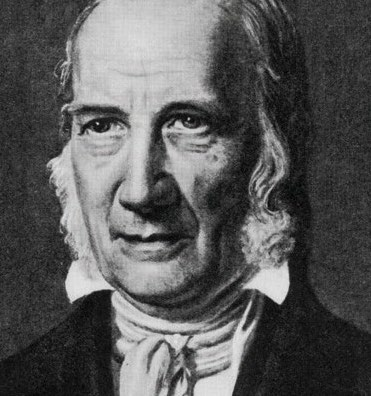
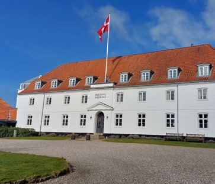
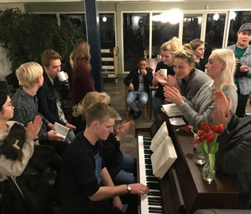

6.11 – N.F.S. GRUNDTVIG, DANSKHED, HØJSKOLER OG KIRKELIV
sidde 221
Danskhed, Højskoler Og Kirkeliv
Præsten, salmedigteren og samfundsdebattøren Nikolai Frederik Severin Grundtvig (1783-1872) blev en central skikkelse i udviklingen af tænk ning, kultur og foreningsliv i Danmark i 1800tallet. Hans tanker har også haft meget stor indflydelse på nutidig dansk selvforståelse.
Grundtvig var teolog og arbejdede det meste af sit liv som præst, men hans omfattende engage ment i samfundslivet og tanker om, hvad det ville sige at være dansk, kom op gennem 1800-tallet til at spille en afgørende rolle i udviklingen af den brede befolknings nationale bevidsthed – det vil sige dens fælles opfattelse af, hvad det vil sige at være dansk. Med andre ord det der i dag ofte betegnes som ’danskhed’. Han levede i tiden, hvor Danmark med tabet af Norge (1814) og af Slesvig og Holsten (1864) blev en småstat, men til gengæld fik en ensartet befolkning, hvor stort set alle talte dansk. Det skabte grundlaget for et land med høj sammenhængskraft og fik afgørende betydning for Grundtvigs ideer.N.F.S. Grundtvig (1783-1872).
N.F.S. Grundtvig (1783-1872).
Det Folkelige Blev Det Nationale
Grundtvig gjorde sig mange tanker om, hvordan befolkningen, der indtil da havde adlydt kongens beslutninger uden modstand, kunne blive kompetente og lige værdige borgere. Centralt i Grundtvigs tankegang stod begrebet ”folkelighed”, hvilket betød, at han tog udgangspunkt i folket – almindelige mennesker og ikke som hidtil eliterne (for eksempel herremændene, akademikerne eller det velha vende borgerskab). Dette var grundlaget for al hans tænkning.
Folkelighed blev for ham et positivt begreb, der skulle være det centrale i alt – blandt andet i love, regler, institutioner og adfærd, som derfor burde tage udgangspunkt i den brede befolknings (især landbefolkningens) kultur, levevis og verdensbillede. Og gennem bredt anlagt oplysning og uddannelse skulle alle gøres til en del af det store nationale fællesskab.
På denne måde kunne de samfundsgrupper, der indtil da havde forstået sig selv som ret adskilte, føres sammen til et samlet folk, en nation.
Læremateriale Til Indfødsretsprøven

sidde 222
Højskolen
Grundtvigs ideer blev også grundlaget for højskolebevægelsen. Folkehøjskolen skulle ifølge Grundtvig være anderledes end de eksisterende skoler og univer siteter. Her skulle eleverne ikke lære udenad eller gå til eksamen. Undervis ningen skulle i stedet baseres på ”det levende ord”. Eleverne skulle lære at være nysgerrige og diskutere.
Befolkningen skulle på højskolerne ”lære for livet”, oplyses i bred forstand om emner som for eksempel dansk historie, digtekunst eller naturvidenskab. Dermed kunne de blive kompetente samfundsborgere med ansvar for både sig selv og helheden. Vigtige dele af højskolelivet var foredrag og fællessang. Siden 1894 er Højskolesangbogen udkommet i mange udgaver. Den indeholder talrige fædrelandssange og salmer, som blandt andre Grundtvig selv har skrevet.
Højskolen henvendte sig især til unge mænd og kvinder fra landbomiljøet. De havde efter Grundtvigs mening særligt behov for undervisning, der kunne vække elevernes naturlige interesse og livsmod og dermed udvikle dem til aktive og medlevende medborgere. Den første grundtvigske højskole blev åbnet i 1844 i Rødding i Sønderjylland, og snart fulgte mange flere efter over hele landet. Her kunne de unge fra landet på en vinters ophold hente inspiration til deres fremtidige aktive liv hjemme i lokalsamfundet. Det var blandt andet denne bedre uddannelse af landbefolkningen gennem højskoleophold, der førte til andels bevægelsens store succes i slutningen af 1800-tallet.Rødding Højskole i Sønderjylland. Foto: Rødding Højskole. Rødding
Rødding Højskole i Sønderjylland. Foto: Rødding Højskole.
Højskolebevægelsens betydning blev mindre i takt med industrialiseringen. I løbet af 1900-tallet mistede landbruget gradvist betydning, vandringen fra land til by tog fart, og det traditionelle skolesystem blev udbygget. I dag henvender højskolerne sig især til unge fra byerne, som efter studentereksamen vil udvikle sig personligt, inden de begynder på en videregående uddannelse.
Læremateriale Til Indfødsretsprøven


sidde 223
Flere nutidige højskoler er efterhånden blevet specialiserede temaskoler, hvor der for eksempel dyrkes idræt eller musik på eliteniveau. Denne type højskoler har dermed fjernet sig noget fra Grundtvigs oprindelige tanke om højskolen som nerven i almen folkeoplysning.
Grundtvig Og Folkekirken
Grundtvig havde også stor indflydelse på dansk kirkeliv. Han har således lagt navn til den danske folkekirkes dominerende retning, grundtvigianismen, der bygger på en udogmatisk kristendomsopfattelse med udgangspunkt i glæden ved livet. Grundtvig formulerede første gang sit syn på kristendommen i 1832 med et udtryk, der var typisk for ham, nemlig: ”Menneske først – kristen så”. Det er også på grund af Grundtvig, at betegnelsen ”folke-” indgår i navnet på mange ord som Folketing, folkehøjskole, folkeskole, folkebibliotek osv.
Grundtvig var også medlem af Den grundlovsgivende Rigsforsamling, som udformede Danmarks første demokratiske grundlov, der trådte i kraft 5. juni 1849. Det skyldtes især hans indsats her, at den danske kirke aldrig er blevet en statskirke. Den moderne danske kirke er en folkekirke, der nok understøttes af staten, men ellers udfører sine funktioner efter regler, som kirken selv fast lægger. Dette er helt i tråd med Grundtvigs tanker om folkelighed, som også ligger til grund for den måde, som den danske nation ser sig selv på.
Grundtvigs Salmer Og Sange
Ved siden af sit kirkelige og politiske arbejde var Grundtvig Danmarks mest produktive forfatter af fædrelandssange og salmer. I løbet af sin lange levetid skrev han således flere end 1.500, og mange af dem findes stadig i Højskole sangbogen og Den Danske Salmebog. Ved næsten alle danske kirkebryllupper synges ”Det er så yndigt at følges ad”, og hvert nytår kort efter midnat drikker mange champagne og spiser kransekage til tonerne af ”Vær velkommen, Herrens år” – begge skrevet af Grundtvig.
Læremateriale Til Indfødsretsprøven
Fonte: Læremateriale til Indfødsretsprøven, SIRI.